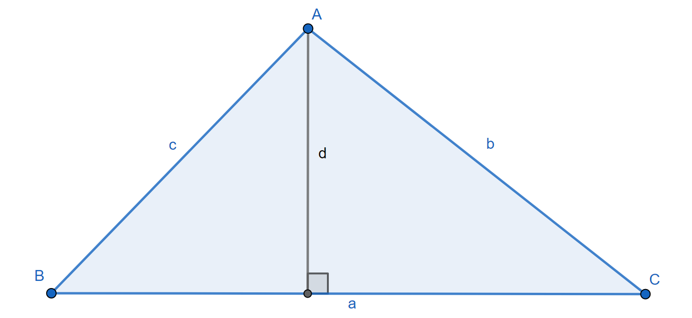
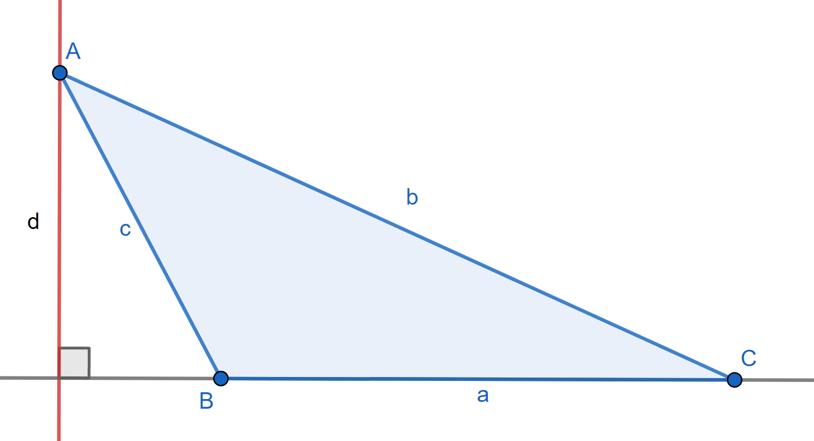

Law of Sines

The law of sines draws a relation between angles and the sides opposite them.
To derive the formula, choose two angles of an arbitrary triangle and construct the altitude perpendicular to their shared edge.
`\displaystyle \sin B = \frac d c, \, \sin C = \frac d b \implies d=c\cdot \sin B = b\cdot \sin C \implies \frac {\sin B} b = \frac {\sin C} c`
Repeat with the third angle and one of the two previous angles to obtain:
`\boxed{\displaystyle \frac {\sin A} a = \frac {\sin B} b = \frac {\sin C} c}`
As seen below, this applies even for obtuse angles, keeping in mind that `\sin (\pi-\theta) = \sin \theta` for all angles `\theta`.
